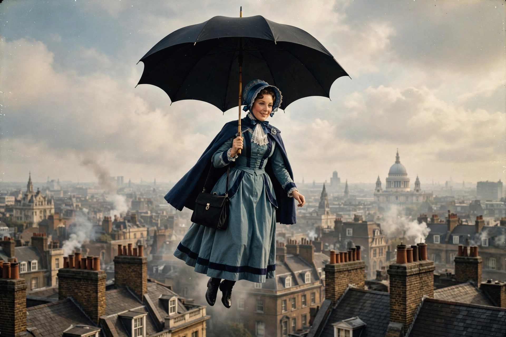

Mary Poppins (film)
| Mary Poppins | |
|---|---|
 | |
| Directed by | Robert Stevenson |
| Screenplay by | Bill Walsh, Don DaGradi |
| Based on | Mary Poppins by P. L. Travers |
| Produced by | Walt Disney |
| Starring | Julie Andrews, Dick Van Dyke, David Tomlinson, Glynis Johns |
| Music by | Richard M. Sherman, Robert B. Sherman |
| Release date | August 27, 1964 |
| Running time | 139 minutes |
| Budget | $4.4–6 million |
| Box office | $103.1 million |
Mary Poppins is a 1964 American musical fantasy film directed by Robert Stevenson and produced by Walt Disney, with songs written and composed by the Sherman Brothers. The screenplay is by Bill Walsh and Don DaGradi, based on P. L. Travers's book series Mary Poppins. The film, which combines live-action and animation, stars Julie Andrews in her feature film debut as Mary Poppins, a magical nanny who visits a dysfunctional family in London and employs her unique lifestyle to improve the family's dynamic. Dick Van Dyke, David Tomlinson, and Glynis Johns co-star.
Plot
In Edwardian London, the wealthy but distant banker George Banks and his suffragette wife Winifred hire a new nanny after their children Jane and Michael scare off another. The children advertise for a kind nanny; instead the magical Mary Poppins descends from the sky with her umbrella. With her friend Bert, a chimney sweep and street artist, she takes the children on magical outings — jumping into a chalk pavement picture, serving tea on a ceiling, and dancing with chimney sweeps atop the rooftops — while gently steering Mr Banks from his obsession with order and work towards his family. After a crisis at the bank and a tuppence meant for feeding the birds, Banks is transformed; the film ends with the family flying a kite together as Mary Poppins departs on the west wind.
Production
Walt Disney pursued the film rights from Travers for over twenty years, beginning in 1944; she resisted, disliked many of the eventual film's changes, and their fraught negotiation was later dramatised in the film Saving Mr. Banks (2013). The film's animated sequences used Disney's sodium vapour process for combining actors with animation, notably in the "Jolly Holiday" sequence and the penguin dance. Songs by Richard and Robert Sherman include "A Spoonful of Sugar", "Chim Chim Cher-ee", "Supercalifragilisticexpialidocious", "Feed the Birds", and "Let's Go Fly a Kite".
Reception
Mary Poppins was Disney's biggest financial success to that date and received thirteen Academy Award nominations, winning five, including Best Actress for Andrews and Best Original Song for "Chim Chim Cher-ee". It is considered Walt Disney's crowning live-action achievement and one of the greatest musical films ever made. A sequel, Mary Poppins Returns, was released in 2018 with Emily Blunt in the title role.
See also
References
Lawson, Valerie (2005). Mary Poppins, She Wrote: The Life of P. L. Travers. Simon & Schuster.